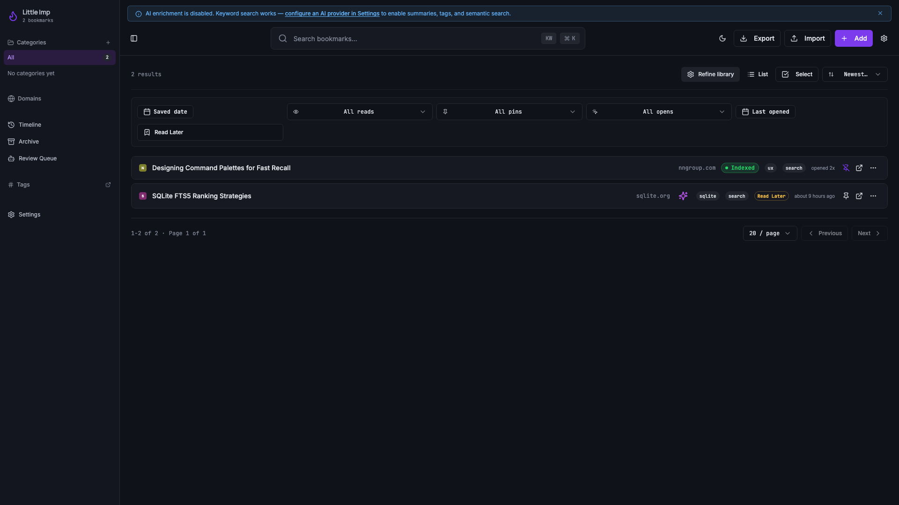
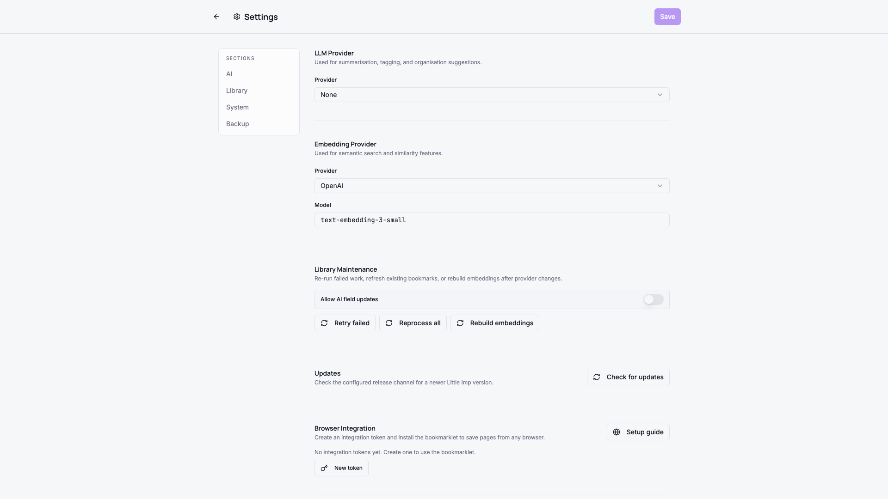
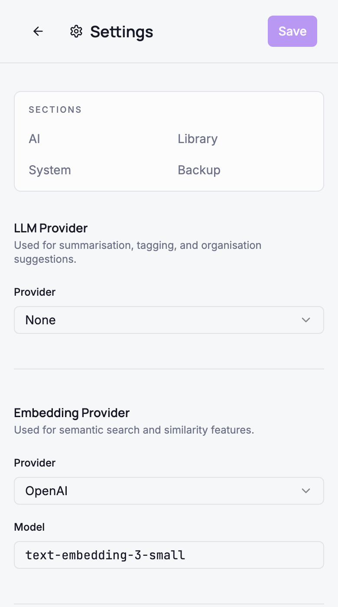
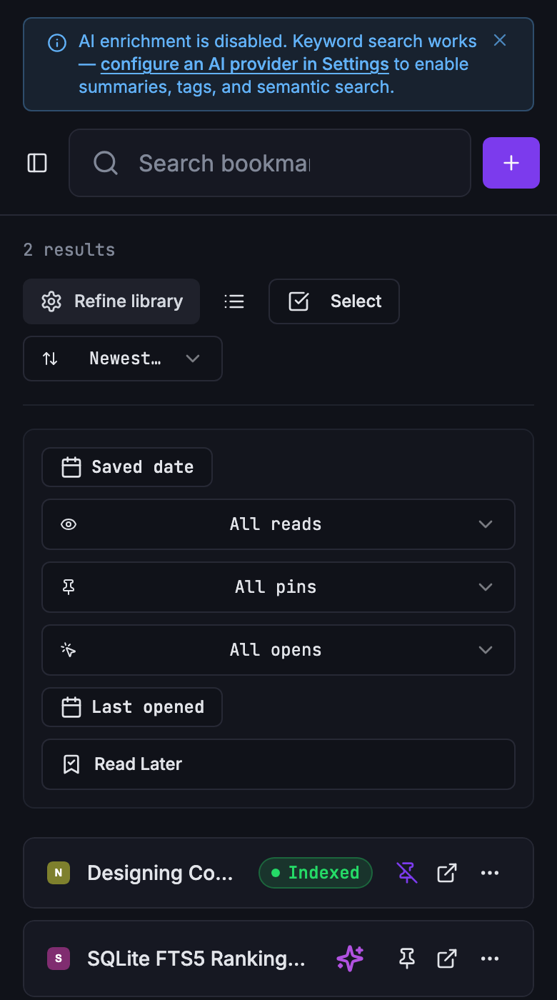
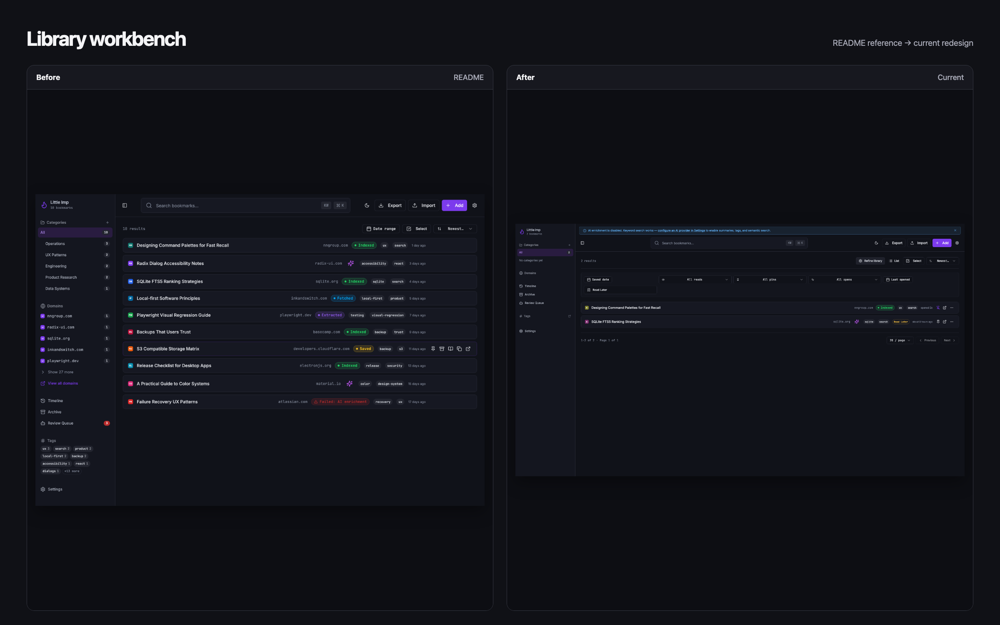
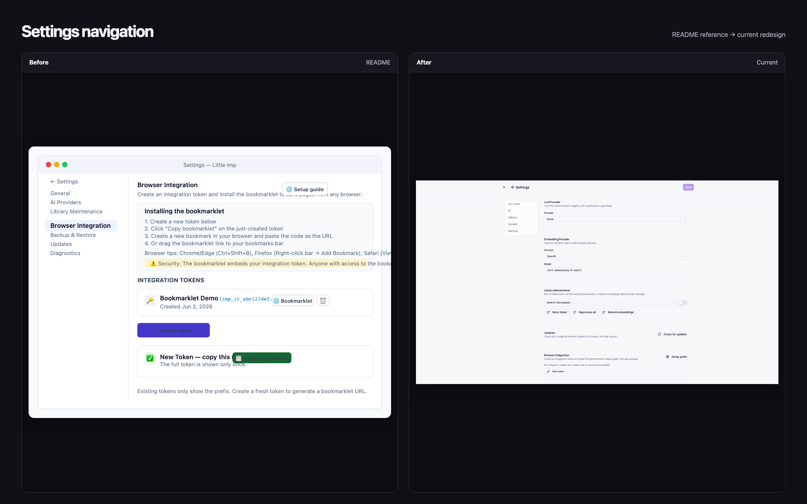
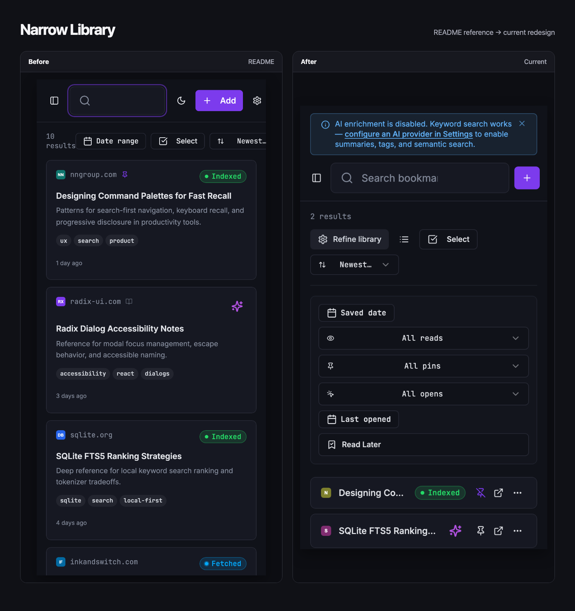

Grimoire Task Report
Quiet Operational UI Redesign

Before
The Library presented all filtering controls at once, bookmark rows crowded several hover-dependent actions together, and Settings was a long, undifferentiated form.
Problem
The important reading and library-management decisions were competing with secondary controls. This was especially costly at narrow widths and for keyboard or touch users.
Changes Added
- Added a quiet operational token layer, display/body/mono typography roles, and reduced-motion treatment.
- Made list view the default; moved library filters behind an explicit Refine library disclosure; and kept result rows scan-first.
- Consolidated secondary bookmark commands into a labelled overflow menu while retaining direct open, pin, and trash affordances.
- Placed pipeline status in bookmark detail headers before the reading body.
- Added an anchored, responsive Settings index for AI, Library, System, and Backup groups.
Result
Core work remains dense but calmer: users see a small action hierarchy first, can reveal deeper controls intentionally, and can navigate long settings safely at desktop and narrow widths.
Verification
- Focused Vitest coverage for Library disclosure, bookmark action overflow, detail status placement, and Settings anchors.
- Frontend and daemon TypeScript checks completed successfully.
- Local browser captures using deterministic API mocks checked 1920px desktop and 390px at 2× density; each capture had matching client and scroll widths.
Additional screenshots



README reference comparisons



Files changed
design.mdandtokens.csssrc/pages/Index.tsxandsrc/hooks/use-preferences.tsBookmarkCard.tsxandBookmarkDetail.tsxSettings.tsxand focused tests